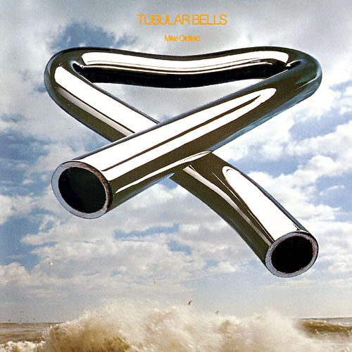

RecentsThis is Juice Wrld!This is xxxtentacionThis is Diljit Dosanjh

TUBLAR BELLS
by Vikrant Sharma
About the authorarijit singh
Arijit Singh (born 25 April 1987) is an Indian playback singer and
music composer. The recipient of several accolades including a
National Film Award and seven Filmfare Awards, he has recorded
songs in several Indian languages, predominantly Hindi and
Bengali. Singh began his career when he participated in the
contemporary reality show Fame Gurukul in 2005.